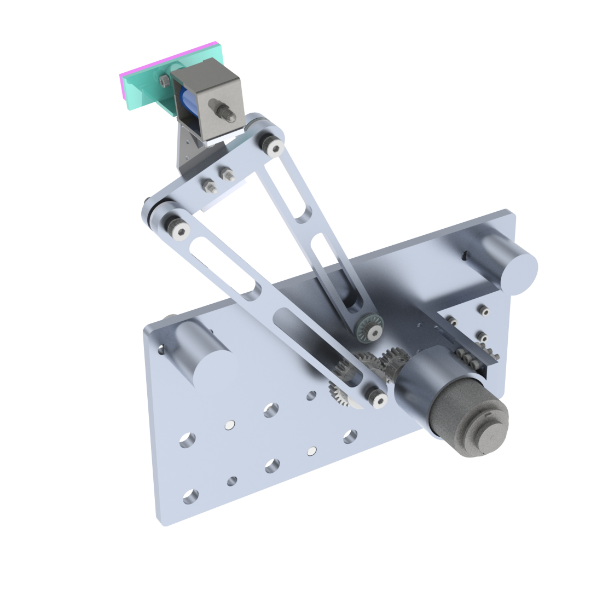
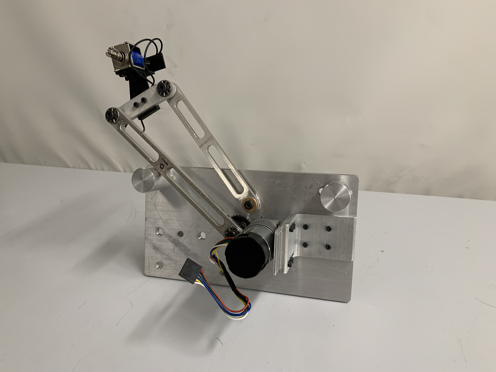

Home / Portfolio / Button-Pressing Machine
Button-Pressing Machine
An exploration of mechatronics, machine design, controls, and machining.
Description:
In an arcade-style button pressing game, this device uses a four bar linkage equipped with a solenoid to press buttons as fast as possible. A PID controller makes it rapidly move between the different buttons.
I was responsible for coding the Arduino firmware and tuning the controller gains. I also designed the four bar linkage, ensuring a trajectory that reached all required positions, and helped in manufacturing the aluminum links, which involved waterjet cutting and CNC milling.

